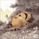

-  김환영-[나비를 잡는 아버지] [한국문학인]ㅣ김환영의 그림은 단단하고 투명하다. 그 닭은 아마 우리나라에서 가장 유명한 암탈일 것이다. 야무진 부리를 들고 동쪽으로 한발 성큼 내딛는
- 김환영-[나비를 잡는 아버지] [한국문학인]ㅣ김환영의 그림은 단단하고 투명하다. 그 닭은 아마 우리나라에서 가장 유명한 암탈일 것이다. 야무진 부리를 들고 동쪽으로 한발 성큼 내딛는
-
 스트라이크와 볼의 탄생 - 야구의
[야구]ㅣ야구에서 스트라이크와 볼의 탄생은 그야말로 혁명
스트라이크와 볼의 탄생 - 야구의
[야구]ㅣ야구에서 스트라이크와 볼의 탄생은 그야말로 혁명
-
보령 키조개 - 뽀얖고 큼직한 조갯살
[충청남동]ㅣ키조개는 한반도의 바다에서 나오는 조개 중에서 가장크다.
-
한옥의 '바람 길' - 바람이 드나드
[건축양식]ㅣ한반도는 여름에는 남동풍이, 겨울에는 북서풍이 분다. 한옥은
1/3